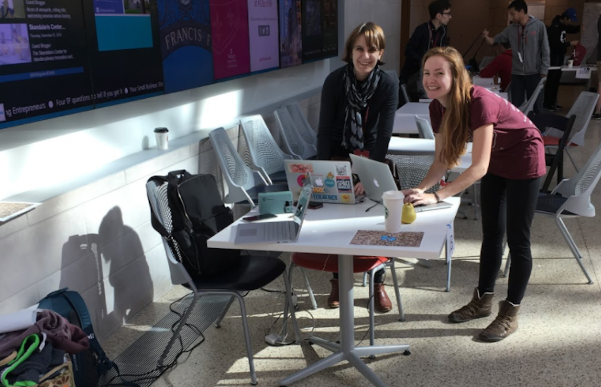

Ramping up research
Soneji's design illustrated that many of the limitations experienced
by people with Parkinson’s disease can be overcome with perceptual tricks.
While the pace of walking on a flat surface is staggered and interrupted,
the continuous motion of using a staircase — or even just the illusion of a staircase —
can enable a person with Parkinson’s to walk with a regular gait.

In order to learn more about this domain, we plunged into a literature review of academic journals and news stories. We also reached out to anyone in our personal networks who had some knowledge of or experience with Parkinson's disease and was available for a guerrilla interview over the phone. Additionally, we generated some preliminary questions to help guide our research:
- Is it hard to focus gaze with PD? What are benefits of voice vs. gaze control?
- Are there certain surface types or colors that would be better to simulate?
- What are some known methods of providing relief?
Selected findings
- Some therapists have used tiles or footprints on the ground to improve foot placement and widen the patient's base of support.
- While many encounter difficulty extending an arm to interact with an object, the introduction of a moving target provides an active stimulus that prompts a response. In one video interview, Tom, a 40 year old man suffering from Parkinson's, explained the critical advantage of moving targets: "If someone chucked a ball at me, my hand would go straight out. And yet if you asked me to put my arm out, it would go so slowly."
- A metronomic pace is effective for maintaining unemcumbered motion; researchers have experimented with consistent visual, auditory, and somatosensory cues to coax steady walking. The key is regularity of cadence.
- Festination is a type of shuffled gait in which steps become gradually smaller, faster, and less controlled, and often the only way to stop is to crash into an object. Thus it's important to keep motion steady, even with natural, intentional interruptions like changing direction.
- The color blue may help relieve symptoms of dyskinesia (the impairment of voluntary movement). In one study, symptoms in patients suffering from Parkinson’s disease had a tendency to worsen in red environments. Wearing a pair of blue glasses or merely focusing on a blue subject helped restore steadiness.
Please reach out to learn more about the specific literature referenced here.